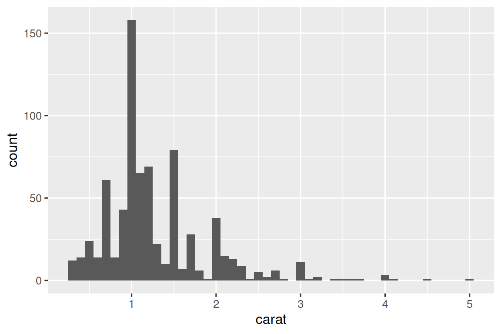

library(tidyverse)26 Iteración
26.1 Introducción
En este capítulo, aprenderá herramientas para la iteración, realizando repetidamente la misma acción en diferentes objetos. La iteración en R generalmente tiende a verse bastante diferente de otros lenguajes de programación porque gran parte de ella está implícita y la obtenemos de forma gratuita. Por ejemplo, si desea duplicar un vector numérico x en R, simplemente puede escribir 2 * x. En la mayoría de los otros idiomas, necesitaría duplicar explícitamente cada elemento de x usando algún tipo de bucle for.
Este libro ya le ha brindado una pequeña pero poderosa cantidad de herramientas que realizan la misma acción para múltiples “cosas”:
facet_wrap()yfacet_grid()dibuja una gráfica para cada subconjunto.group_by()mássummarize()calcula un resumen de estadísticas para cada subconjunto.unnest_wider()yunnest_longer()crear nuevas filas y columnas para cada elemento de una lista-columna.
Ahora es el momento de aprender algunas herramientas más generales, a menudo llamadas herramientas de programación funcional porque están construidas alrededor de funciones que toman otras funciones como entradas. El aprendizaje de la programación funcional puede pasar fácilmente a lo abstracto, pero en este capítulo mantendremos las cosas concretas centrándonos en tres tareas comunes: modificar varias columnas, leer varios archivos y guardar varios objetos.
26.1.1 Requisitos previos
En este capítulo, nos centraremos en las herramientas proporcionadas por dplyr y purrr, ambos miembros principales de tidyverse. Has visto dplyr antes, pero purrr es nuevo. Solo vamos a usar un par de funciones purrr en este capítulo, pero es un gran paquete para explorar a medida que mejora sus habilidades de programación.
26.2 Modificar varias columnas
Imagina que tienes este tibble simple y quieres contar el número de observaciones y calcular la mediana de cada columna.
set.seed(1014)
df <- tibble(
a = rnorm(10),
b = rnorm(10),
c = rnorm(10),
d = rnorm(10)
)Podrías hacerlo con copiar y pegar:
df |> summarize(
n = n(),
a = median(a),
b = median(b),
c = median(c),
d = median(d),
)
#> # A tibble: 1 × 5
#> n a b c d
#> <int> <dbl> <dbl> <dbl> <dbl>
#> 1 10 -0.246 -0.287 -0.0567 0.144Eso rompe nuestra regla general de nunca copiar y pegar más de dos veces, y puedes imaginar que esto se volverá muy tedioso si tienes decenas o incluso cientos de columnas. En su lugar, puedes usar across():
df |> summarize(
n = n(),
across(a:d, median),
)
#> # A tibble: 1 × 5
#> n a b c d
#> <int> <dbl> <dbl> <dbl> <dbl>
#> 1 10 -0.246 -0.287 -0.0567 0.144across() tiene tres argumentos particularmente importantes, que discutiremos en detalle en las siguientes secciones. Usará los dos primeros cada vez que use across(): el primer argumento, .cols, especifica sobre qué columnas desea iterar, y el segundo argumento, .fns, especifica qué hacer con cada columna Puedes usar el argumento .names cuando necesites un control adicional sobre los nombres de las columnas de salida, lo cual es particularmente importante cuando usas across() con mutate(). También discutiremos dos variaciones importantes, if_any() y if_all(), que funcionan con filter().
26.2.1 Selección de columnas con .cols
El primer argumento de across(), .cols, selecciona las columnas para transformar. Esto usa las mismas especificaciones que select(), Sección 3.3.2, por lo que puede usar funciones como starts_with() y ends_with() para seleccionar columnas según su nombre.
Hay dos técnicas de selección adicionales que son particularmente útiles para across(): everything() y where(). everything() es sencillo: selecciona todas las columnas (no agrupadas):
set.seed(1014)
df <- tibble(
grp = sample(2, 10, replace = TRUE),
a = rnorm(10),
b = rnorm(10),
c = rnorm(10),
d = rnorm(10)
)
df |>
group_by(grp) |>
summarize(across(everything(), median))
#> # A tibble: 2 × 5
#> grp a b c d
#> <int> <dbl> <dbl> <dbl> <dbl>
#> 1 1 -0.244 -0.522 -0.0974 -0.251
#> 2 2 -0.247 0.468 0.112 0.0700Tenga en cuenta que las columnas de agrupación (grp aquí) no se incluyen en across(), porque summarize() las conserva automáticamente.
where() le permite seleccionar columnas según su tipo:
where(is.numeric)selecciona todas las columnas numéricas.where(is.character)selecciona todas las columnas de cadena.where(is.Date)selecciona todas las columnas de fecha.where(is.POSIXct)selecciona todas las columnas de fecha y hora.where(is.logical)selecciona todas las columnas lógicas.
Al igual que otros selectores, puede combinarlos con álgebra booleana. Por ejemplo, !where(is.numeric) selecciona todas las columnas no numéricas, y starts_with("a") & where(is.logical) selecciona todas las columnas lógicas cuyo nombre comienza con “a”.
26.2.2 Llamar a una sola función
El segundo argumento de across() define cómo se transformará cada columna. En casos simples, como el anterior, esta será una sola función existente. Esta es una característica bastante especial de R: estamos pasando una función (median, mean, str_flatten, …) a otra función (across). Esta es una de las características que hace de R un lenguaje de programación funcional.
Es importante tener en cuenta que estamos pasando esta función a across(), por lo que across() puede llamarla; no lo estamos llamando nosotros mismos. Eso significa que el nombre de la función nunca debe ir seguido de (). Si lo olvida, obtendrá un error:
df |>
group_by(grp) |>
summarize(across(everything(), median()))
#> Error in `summarize()`:
#> ℹ In argument: `across(everything(), median())`.
#> Caused by error in `median.default()`:
#> ! argument "x" is missing, with no defaultEste error surge porque está llamando a la función sin entrada, por ejemplo:
median()
#> Error in `median.default()`:
#> ! argument "x" is missing, with no default26.2.3 Llamar a múltiples funciones
En casos más complejos, es posible que desee proporcionar argumentos adicionales o realizar varias transformaciones. Motivemos este problema con un ejemplo simple: ¿qué sucede si tenemos algunos valores faltantes en nuestros datos? median() propaga esos valores perdidos, dándonos un resultado subóptimo:
set.seed(1014)
rnorm_na <- function(n, n_na, mean = 0, sd = 1) {
sample(c(rnorm(n - n_na, mean = mean, sd = sd), rep(NA, n_na)))
}
df_miss <- tibble(
a = rnorm_na(5, 1),
b = rnorm_na(5, 1),
c = rnorm_na(5, 2),
d = rnorm(5)
)
df_miss |>
summarize(
across(a:d, median),
n = n()
)
#> # A tibble: 1 × 5
#> a b c d n
#> <dbl> <dbl> <dbl> <dbl> <int>
#> 1 NA NA NA 0.413 5Sería bueno si pudiéramos pasar na.rm = TRUE a median() para eliminar estos valores faltantes. Para hacerlo, en lugar de llamar a median() directamente, necesitamos crear una nueva función que llame a median() con los argumentos deseados:
df_miss |>
summarize(
across(a:d, function(x) median(x, na.rm = TRUE)),
n = n()
)
#> # A tibble: 1 × 5
#> a b c d n
#> <dbl> <dbl> <dbl> <dbl> <int>
#> 1 -0.703 -0.265 -0.522 0.413 5Esto es un poco detallado, por lo que R viene con un atajo útil: para este tipo de función desechable, o anónima1, puede reemplazar función con \[^iteration-2 ]:
df_miss |>
summarize(
across(a:d, \(x) median(x, na.rm = TRUE)),
n = n()
)En cualquier caso, across() se expande efectivamente al siguiente código:
df_miss |>
summarize(
a = median(a, na.rm = TRUE),
b = median(b, na.rm = TRUE),
c = median(c, na.rm = TRUE),
d = median(d, na.rm = TRUE),
n = n()
)Cuando eliminamos los valores que faltan de la mediana, median(), sería bueno saber cuántos valores se eliminaron. Podemos averiguarlo proporcionando dos funciones a across(): una para calcular la mediana y la otra para contar los valores que faltan. Proporciona múltiples funciones usando una lista con nombre para .fns:
df_miss |>
summarize(
across(a:d, list(
median = \(x) median(x, na.rm = TRUE),
n_miss = \(x) sum(is.na(x))
)),
n = n()
)
#> # A tibble: 1 × 9
#> a_median a_n_miss b_median b_n_miss c_median c_n_miss d_median d_n_miss
#> <dbl> <int> <dbl> <int> <dbl> <int> <dbl> <int>
#> 1 -0.703 1 -0.265 1 -0.522 2 0.413 0
#> # ℹ 1 more variable: n <int>Si observa detenidamente, puede intuir que las columnas se nombran utilizando una especificación de pegamento (Sección 14.3.2) como {.col}_{.fn} donde .col es el nombre de la columna original y . fn es el nombre de la función. ¡Eso no es una coincidencia! Como aprenderá en la siguiente sección, puede usar el argumento .names para proporcionar su propia especificación de pegamento.
26.2.4 Nombres de columna
El resultado de across() se nombra de acuerdo con la especificación provista en el argumento .names. Podríamos especificar el nuestro si quisiéramos que el nombre de la función fuera primero 2:
df_miss |>
summarize(
across(
a:d,
list(
median = \(x) median(x, na.rm = TRUE),
n_miss = \(x) sum(is.na(x))
),
.names = "{.fn}_{.col}"
),
n = n(),
)
#> # A tibble: 1 × 9
#> median_a n_miss_a median_b n_miss_b median_c n_miss_c median_d n_miss_d
#> <dbl> <int> <dbl> <int> <dbl> <int> <dbl> <int>
#> 1 -0.703 1 -0.265 1 -0.522 2 0.413 0
#> # ℹ 1 more variable: n <int>El argumento .names es particularmente importante cuando usas across() con mutate(). Por defecto, la salida de across() recibe los mismos nombres que las entradas. Esto significa que across() dentro de mutate() reemplazará las columnas existentes. Por ejemplo, aquí usamos coalesce() para reemplazar NAs con 0:
df_miss |>
mutate(
across(a:d, \(x) coalesce(x, 0))
)
#> # A tibble: 5 × 4
#> a b c d
#> <dbl> <dbl> <dbl> <dbl>
#> 1 -0.00557 -0.283 -1.86 -0.783
#> 2 0.255 -0.247 -0.522 -0.00289
#> 3 -1.40 -0.554 0.512 0.413
#> 4 -2.44 -0.244 0 0.724
#> 5 0 0 0 2.35Si desea crear nuevas columnas, puede usar el argumento .names para dar nuevos nombres a la salida:
df_miss |>
mutate(
across(a:d, \(x) coalesce(x), .names = "{.col}_na_zeros")
)
#> # A tibble: 5 × 8
#> a b c d a_na_zeros b_na_zeros c_na_zeros d_na_zeros
#> <dbl> <dbl> <dbl> <dbl> <dbl> <dbl> <dbl> <dbl>
#> 1 -0.00557 -0.283 -1.86 -0.783 -0.00557 -0.283 -1.86 -0.783
#> 2 0.255 -0.247 -0.522 -0.00289 0.255 -0.247 -0.522 -0.00289
#> 3 -1.40 -0.554 0.512 0.413 -1.40 -0.554 0.512 0.413
#> 4 -2.44 -0.244 NA 0.724 -2.44 -0.244 NA 0.724
#> 5 NA NA NA 2.35 NA NA NA 2.3526.2.5 Filtrando
across() es una gran combinación para summarize() y mutate(), pero es más incómodo de usar con filter(), porque generalmente combina varias condiciones con | o &. Está claro que across() puede ayudar a crear varias columnas lógicas, pero ¿entonces qué? Así que dplyr proporciona dos variantes de across() llamadas if_any() y if_all():
# igual que df_miss |> filter(is.na(a) | is.na(b) | is.na(c) | is.na(d))
df_miss |> filter(if_any(a:d, is.na))
#> # A tibble: 2 × 4
#> a b c d
#> <dbl> <dbl> <dbl> <dbl>
#> 1 -2.44 -0.244 NA 0.724
#> 2 NA NA NA 2.35
# igual que df_miss |> filter(is.na(a) & is.na(b) & is.na(c) & is.na(d))
df_miss |> filter(if_all(a:d, is.na))
#> # A tibble: 0 × 4
#> # ℹ 4 variables: a <dbl>, b <dbl>, c <dbl>, d <dbl>26.2.6 across() en funciones
across() es particularmente útil para programar porque te permite operar en múltiples columnas. Por ejemplo, Jacob Scott usa este pequeño ayudante que envuelve un montón de funciones de lubridate para expandir todas las columnas de fecha en columnas de año, mes y día:
expand_dates <- function(df) {
df |>
mutate(
across(where(is.Date), list(year = year, month = month, day = mday))
)
}
df_date <- tibble(
name = c("Amy", "Bob"),
date = ymd(c("2009-08-03", "2010-01-16"))
)
df_date |>
expand_dates()
#> # A tibble: 2 × 5
#> name date date_year date_month date_day
#> <chr> <date> <dbl> <dbl> <int>
#> 1 Amy 2009-08-03 2009 8 3
#> 2 Bob 2010-01-16 2010 1 16across() también facilita el suministro de múltiples columnas en un solo argumento porque el primer argumento usa tidy-select; solo necesita recordar abrazar ese argumento, como discutimos en Sección 25.3.2. Por ejemplo, esta función calculará las medias de las columnas numéricas de forma predeterminada. Pero al proporcionar el segundo argumento, puede optar por resumir solo las columnas seleccionadas:
summarize_means <- function(df, summary_vars = where(is.numeric)) {
df |>
summarize(
across({{ summary_vars }}, \(x) mean(x, na.rm = TRUE)),
n = n(),
.groups = "drop"
)
}
diamonds |>
group_by(cut) |>
summarize_means()
#> # A tibble: 5 × 9
#> cut carat depth table price x y z n
#> <ord> <dbl> <dbl> <dbl> <dbl> <dbl> <dbl> <dbl> <int>
#> 1 Fair 1.05 64.0 59.1 4359. 6.25 6.18 3.98 1610
#> 2 Good 0.849 62.4 58.7 3929. 5.84 5.85 3.64 4906
#> 3 Very Good 0.806 61.8 58.0 3982. 5.74 5.77 3.56 12082
#> 4 Premium 0.892 61.3 58.7 4584. 5.97 5.94 3.65 13791
#> 5 Ideal 0.703 61.7 56.0 3458. 5.51 5.52 3.40 21551
diamonds |>
group_by(cut) |>
summarize_means(c(carat, x:z))
#> # A tibble: 5 × 6
#> cut carat x y z n
#> <ord> <dbl> <dbl> <dbl> <dbl> <int>
#> 1 Fair 1.05 6.25 6.18 3.98 1610
#> 2 Good 0.849 5.84 5.85 3.64 4906
#> 3 Very Good 0.806 5.74 5.77 3.56 12082
#> 4 Premium 0.892 5.97 5.94 3.65 13791
#> 5 Ideal 0.703 5.51 5.52 3.40 2155126.2.7 Comparar con pivot_longer()
Antes de continuar, vale la pena señalar una conexión interesante entre across() y pivot_longer() (Sección 5.3). En muchos casos, usted realiza los mismos cálculos girando primero los datos y luego realizando las operaciones por grupo en lugar de por columna. Por ejemplo, tome este resumen multifunción:
df |>
summarize(across(a:d, list(median = median, mean = mean)))
#> # A tibble: 1 × 8
#> a_median a_mean b_median b_mean c_median c_mean d_median d_mean
#> <dbl> <dbl> <dbl> <dbl> <dbl> <dbl> <dbl> <dbl>
#> 1 -0.246 -0.0426 0.155 -0.0656 0.0480 -0.0297 -0.193 -0.200Podríamos calcular los mismos valores girando más y luego resumiendo:
long <- df |>
pivot_longer(a:d) |>
group_by(name) |>
summarize(
median = median(value),
mean = mean(value)
)
long
#> # A tibble: 4 × 3
#> name median mean
#> <chr> <dbl> <dbl>
#> 1 a -0.246 -0.0426
#> 2 b 0.155 -0.0656
#> 3 c 0.0480 -0.0297
#> 4 d -0.193 -0.200Y si quisieras la misma estructura que across(), podrías pivotar de nuevo:
long |>
pivot_wider(
names_from = name,
values_from = c(median, mean),
names_vary = "slowest",
names_glue = "{name}_{.value}"
)
#> # A tibble: 1 × 8
#> a_median a_mean b_median b_mean c_median c_mean d_median d_mean
#> <dbl> <dbl> <dbl> <dbl> <dbl> <dbl> <dbl> <dbl>
#> 1 -0.246 -0.0426 0.155 -0.0656 0.0480 -0.0297 -0.193 -0.200Esta es una técnica útil para conocer porque a veces te encontrarás con un problema que actualmente no es posible resolver con across(): cuando tienes grupos de columnas con las que quieres calcular simultáneamente. Por ejemplo, imagine que nuestro data frame contiene valores y pesos y queremos calcular una media ponderada:
set.seed(1014)
df_paired <- tibble(
a_val = rnorm(10),
a_wts = runif(10),
b_val = rnorm(10),
b_wts = runif(10),
c_val = rnorm(10),
c_wts = runif(10),
d_val = rnorm(10),
d_wts = runif(10)
)Actualmente no hay forma de hacer esto con across()3, pero es relativamente sencillo con pivot_longer():
df_long <- df_paired |>
pivot_longer(
everything(),
names_to = c("group", ".value"),
names_sep = "_"
)
df_long
#> # A tibble: 40 × 3
#> group val wts
#> <chr> <dbl> <dbl>
#> 1 a -1.40 0.290
#> 2 b -1.86 0.461
#> 3 c 0.935 0.528
#> 4 d 2.76 0.709
#> 5 a 0.255 0.678
#> 6 b -0.522 0.315
#> # ℹ 34 more rows
df_long |>
group_by(group) |>
summarize(mean = weighted.mean(val, wts))
#> # A tibble: 4 × 2
#> group mean
#> <chr> <dbl>
#> 1 a -0.207
#> 2 b -0.237
#> 3 c 0.0208
#> 4 d 0.0655Si es necesario, puede pivot_wider() para devolverlo a la forma original.
26.2.8 Ejercicios
Practica tus habilidades
across()al:Calcular el número de valores únicos en cada columna de
palmerpenguins::penguins.Calcular la media de cada columna en
mtcars.Agrupar ‘diamantes’ por ‘corte’, ‘claridad’ y ‘color’ y luego contar el número de observaciones y calcular la media de cada columna numérica.
¿Qué pasa si usas una lista de funciones en
across(), pero no las nombras? ¿Cómo se llama la salida?Ajuste
expand_dates()para eliminar automáticamente las columnas de fecha después de que se hayan expandido. ¿Necesitas aceptar algún argumento?Explique qué hace cada paso de la tubería en esta función. ¿Qué característica especial de
where()estamos aprovechando?show_missing <- function(df, group_vars, summary_vars = everything()) { df |> group_by(pick({{ group_vars }})) |> summarize( across({{ summary_vars }}, \(x) sum(is.na(x))), .groups = "drop" ) |> select(where(\(x) any(x > 0))) } nycflights13::flights |> show_missing(c(year, month, day))
26.3 Leer varios archivos
En la sección anterior, aprendiste a usar dplyr::across() para repetir una transformación en varias columnas. En esta sección, aprenderá cómo usar purrr::map() para hacer algo con cada archivo en un directorio. Empecemos con un poco de motivación: imagine que tiene un directorio lleno de hojas de cálculo de Excel4 que desea leer. Podrías hacerlo con copiar y pegar:
data2019 <- readxl::read_excel("data/y2019.xlsx")
data2020 <- readxl::read_excel("data/y2020.xlsx")
data2021 <- readxl::read_excel("data/y2021.xlsx")
data2022 <- readxl::read_excel("data/y2022.xlsx")Y luego usa dplyr::bind_rows() para combinarlos todos juntos:
data <- bind_rows(data2019, data2020, data2021, data2022)Puede imaginar que esto se volvería tedioso rápidamente, especialmente si tuviera cientos de archivos, no solo cuatro. Las siguientes secciones le muestran cómo automatizar este tipo de tareas. Hay tres pasos básicos: use list.files() para listar todos los archivos en un directorio, luego use purrr::map() para leer cada uno de ellos en una lista, luego use purrr::list_rbind( ) para combinarlos en un solo data frame. Luego, analizaremos cómo puede manejar situaciones de creciente heterogeneidad, en las que no puede hacer exactamente lo mismo con todos los archivos.
26.3.1 Listado de archivos en un directorio
Como sugiere el nombre, list.files() enumera los archivos en un directorio. Casi siempre usarás tres argumentos:
El primer argumento,
path, es el directorio en el que buscar.patternes una expresión regular utilizada para filtrar los nombres de archivo. El patrón más común es algo como[.]xlsx$o[.]csv$para encontrar todos los archivos con una extensión específica.full.namesdetermina si el nombre del directorio debe incluirse o no en la salida. Casi siempre quieres que esto seaTRUE.
Para concretar nuestro ejemplo motivador, este libro contiene una carpeta con 12 hojas de cálculo de Excel que contienen datos del paquete gapminder. Esta carpeta puede ser encontrada en https://github.com/hadley/r4ds/tree/main/data/gapminder. Cada archivo contiene datos de un año para 142 países. Podemos listarlos todos con la llamada apropiada a list.files():
paths <- list.files("data/gapminder", pattern = "[.]xlsx$", full.names = TRUE)
paths
#> [1] "data/gapminder/1952.xlsx" "data/gapminder/1957.xlsx"
#> [3] "data/gapminder/1962.xlsx" "data/gapminder/1967.xlsx"
#> [5] "data/gapminder/1972.xlsx" "data/gapminder/1977.xlsx"
#> [7] "data/gapminder/1982.xlsx" "data/gapminder/1987.xlsx"
#> [9] "data/gapminder/1992.xlsx" "data/gapminder/1997.xlsx"
#> [11] "data/gapminder/2002.xlsx" "data/gapminder/2007.xlsx"26.3.2 Lists
Ahora que tenemos estas 12 rutas, podríamos llamar a read_excel() 12 veces para obtener 12 data frames:
gapminder_1952 <- readxl::read_excel("data/gapminder/1952.xlsx")
gapminder_1957 <- readxl::read_excel("data/gapminder/1957.xlsx")
gapminder_1962 <- readxl::read_excel("data/gapminder/1962.xlsx")
...,
gapminder_2007 <- readxl::read_excel("data/gapminder/2007.xlsx")Pero poner cada hoja en su propia variable hará que sea difícil trabajar con ellas unos pasos más adelante. En cambio, será más fácil trabajar con ellos si los ponemos en un solo objeto. Una lista es la herramienta perfecta para este trabajo:
files <- list(
readxl::read_excel("data/gapminder/1952.xlsx"),
readxl::read_excel("data/gapminder/1957.xlsx"),
readxl::read_excel("data/gapminder/1962.xlsx"),
...,
readxl::read_excel("data/gapminder/2007.xlsx")
)Ahora que tiene estos data frames en una lista, ¿cómo obtiene uno? Puedes usar files[[i]] para extraer el i-ésimo elemento:
files[[3]]
#> # A tibble: 142 × 5
#> country continent lifeExp pop gdpPercap
#> <chr> <chr> <dbl> <dbl> <dbl>
#> 1 Afghanistan Asia 32.0 10267083 853.
#> 2 Albania Europe 64.8 1728137 2313.
#> 3 Algeria Africa 48.3 11000948 2551.
#> 4 Angola Africa 34 4826015 4269.
#> 5 Argentina Americas 65.1 21283783 7133.
#> 6 Australia Oceania 70.9 10794968 12217.
#> # ℹ 136 more rowsVolveremos a [[ con más detalle en Sección 27.3.
26.3.3 purrr::map() and list_rbind()
El código para recopilar esos data frames en una lista “a mano” es básicamente tan tedioso de escribir como el código que lee los archivos uno por uno. Felizmente, podemos usar purrr::map() para hacer un mejor uso de nuestro vector paths. map() es similar a across(), pero en lugar de hacer algo con cada columna en un data frame, hace algo con cada elemento de un vector. map(x, f) es una abreviatura de:
list(
f(x[[1]]),
f(x[[2]]),
...,
f(x[[n]])
)Entonces podemos usar map() para obtener una lista de 12 data frames:
files <- map(paths, readxl::read_excel)
length(files)
#> [1] 12
files[[1]]
#> # A tibble: 142 × 5
#> country continent lifeExp pop gdpPercap
#> <chr> <chr> <dbl> <dbl> <dbl>
#> 1 Afghanistan Asia 28.8 8425333 779.
#> 2 Albania Europe 55.2 1282697 1601.
#> 3 Algeria Africa 43.1 9279525 2449.
#> 4 Angola Africa 30.0 4232095 3521.
#> 5 Argentina Americas 62.5 17876956 5911.
#> 6 Australia Oceania 69.1 8691212 10040.
#> # ℹ 136 more rows(Esta es otra estructura de datos que no se muestra de manera particularmente compacta con str(), por lo que es posible que desee cargarla en RStudio e inspeccionarla con View()).
Ahora podemos usar purrr::list_rbind() para combinar esa lista de data frames en un solo data frame:
list_rbind(files)
#> # A tibble: 1,704 × 5
#> country continent lifeExp pop gdpPercap
#> <chr> <chr> <dbl> <dbl> <dbl>
#> 1 Afghanistan Asia 28.8 8425333 779.
#> 2 Albania Europe 55.2 1282697 1601.
#> 3 Algeria Africa 43.1 9279525 2449.
#> 4 Angola Africa 30.0 4232095 3521.
#> 5 Argentina Americas 62.5 17876956 5911.
#> 6 Australia Oceania 69.1 8691212 10040.
#> # ℹ 1,698 more rowsO podríamos hacer ambos pasos a la vez en una canalización:
paths |>
map(readxl::read_excel) |>
list_rbind()¿Qué sucede si queremos pasar argumentos adicionales a read_excel()? Usamos la misma técnica que usamos con across(). Por ejemplo, suele ser útil alcanzar un máximo en las primeras filas de los datos con n_max = 1:
paths |>
map(\(path) readxl::read_excel(path, n_max = 1)) |>
list_rbind()
#> # A tibble: 12 × 5
#> country continent lifeExp pop gdpPercap
#> <chr> <chr> <dbl> <dbl> <dbl>
#> 1 Afghanistan Asia 28.8 8425333 779.
#> 2 Afghanistan Asia 30.3 9240934 821.
#> 3 Afghanistan Asia 32.0 10267083 853.
#> 4 Afghanistan Asia 34.0 11537966 836.
#> 5 Afghanistan Asia 36.1 13079460 740.
#> 6 Afghanistan Asia 38.4 14880372 786.
#> # ℹ 6 more rowsEsto deja en claro que falta algo: no hay una columna year porque ese valor se registra en la ruta, no en los archivos individuales. Abordaremos ese problema a continuación.
26.3.4 Datos en la ruta
A veces, el nombre del archivo es el propio dato. En este ejemplo, el nombre del archivo contiene el año, que de otro modo no se registra en los archivos individuales. Para colocar esa columna en el data frame final, debemos hacer dos cosas:
Primero, nombramos el vector de rutas. La forma más fácil de hacer esto es con la función set_names(), que puede tomar una función. Aquí usamos basename() para extraer solo el nombre del archivo de la ruta completa:
paths |> set_names(basename)
#> 1952.xlsx 1957.xlsx
#> "data/gapminder/1952.xlsx" "data/gapminder/1957.xlsx"
#> 1962.xlsx 1967.xlsx
#> "data/gapminder/1962.xlsx" "data/gapminder/1967.xlsx"
#> 1972.xlsx 1977.xlsx
#> "data/gapminder/1972.xlsx" "data/gapminder/1977.xlsx"
#> 1982.xlsx 1987.xlsx
#> "data/gapminder/1982.xlsx" "data/gapminder/1987.xlsx"
#> 1992.xlsx 1997.xlsx
#> "data/gapminder/1992.xlsx" "data/gapminder/1997.xlsx"
#> 2002.xlsx 2007.xlsx
#> "data/gapminder/2002.xlsx" "data/gapminder/2007.xlsx"Esos nombres son llevados automáticamente por todas las funciones del mapa, por lo que la lista de data frames tendrá esos mismos nombres:
files <- paths |>
set_names(basename) |>
map(readxl::read_excel)Eso hace que esta llamada a map() sea abreviada para:
files <- list(
"1952.xlsx" = readxl::read_excel("data/gapminder/1952.xlsx"),
"1957.xlsx" = readxl::read_excel("data/gapminder/1957.xlsx"),
"1962.xlsx" = readxl::read_excel("data/gapminder/1962.xlsx"),
...,
"2007.xlsx" = readxl::read_excel("data/gapminder/2007.xlsx")
)También puedes usar [[ para extraer elementos por nombre:
files[["1962.xlsx"]]
#> # A tibble: 142 × 5
#> country continent lifeExp pop gdpPercap
#> <chr> <chr> <dbl> <dbl> <dbl>
#> 1 Afghanistan Asia 32.0 10267083 853.
#> 2 Albania Europe 64.8 1728137 2313.
#> 3 Algeria Africa 48.3 11000948 2551.
#> 4 Angola Africa 34 4826015 4269.
#> 5 Argentina Americas 65.1 21283783 7133.
#> 6 Australia Oceania 70.9 10794968 12217.
#> # ℹ 136 more rowsLuego usamos el argumento names_to para list_rbind() para decirle que guarde los nombres en una nueva columna llamada year y luego usamos readr::parse_number() para extraer el número de la cadena.
paths |>
set_names(basename) |>
map(readxl::read_excel) |>
list_rbind(names_to = "year") |>
mutate(year = parse_number(year))
#> # A tibble: 1,704 × 6
#> year country continent lifeExp pop gdpPercap
#> <dbl> <chr> <chr> <dbl> <dbl> <dbl>
#> 1 1952 Afghanistan Asia 28.8 8425333 779.
#> 2 1952 Albania Europe 55.2 1282697 1601.
#> 3 1952 Algeria Africa 43.1 9279525 2449.
#> 4 1952 Angola Africa 30.0 4232095 3521.
#> 5 1952 Argentina Americas 62.5 17876956 5911.
#> 6 1952 Australia Oceania 69.1 8691212 10040.
#> # ℹ 1,698 more rowsEn casos más complicados, puede haber otras variables almacenadas en el nombre del directorio, o tal vez el nombre del archivo contenga varios bits de datos. En ese caso, use set_names() (sin ningún argumento) para registrar la ruta completa y luego use tidyr::separate_wider_delim() y sus amigos para convertirlos en columnas útiles.
paths |>
set_names() |>
map(readxl::read_excel) |>
list_rbind(names_to = "year") |>
separate_wider_delim(year, delim = "/", names = c(NA, "dir", "file")) |>
separate_wider_delim(file, delim = ".", names = c("file", "ext"))
#> # A tibble: 1,704 × 8
#> dir file ext country continent lifeExp pop gdpPercap
#> <chr> <chr> <chr> <chr> <chr> <dbl> <dbl> <dbl>
#> 1 gapminder 1952 xlsx Afghanistan Asia 28.8 8425333 779.
#> 2 gapminder 1952 xlsx Albania Europe 55.2 1282697 1601.
#> 3 gapminder 1952 xlsx Algeria Africa 43.1 9279525 2449.
#> 4 gapminder 1952 xlsx Angola Africa 30.0 4232095 3521.
#> 5 gapminder 1952 xlsx Argentina Americas 62.5 17876956 5911.
#> 6 gapminder 1952 xlsx Australia Oceania 69.1 8691212 10040.
#> # ℹ 1,698 more rows26.3.5 Guarda tu trabajo
Ahora que ha hecho todo este arduo trabajo para llegar a un buen data frame ordenado, es un buen momento para guardar su trabajo:
gapminder <- paths |>
set_names(basename) |>
map(readxl::read_excel) |>
list_rbind(names_to = "year") |>
mutate(year = parse_number(year))
write_csv(gapminder, "gapminder.csv")Ahora, cuando regrese a este problema en el futuro, puede leer en un solo archivo csv. Para conjuntos de datos más grandes y ricos, usar parquet podría ser una mejor opción que .csv, como se explica en Sección 22.4.
Si está trabajando en un proyecto, le sugerimos llamar al archivo que hace este tipo de trabajo de preparación de datos algo así como 0-cleanup.R. El 0 en el nombre del archivo sugiere que esto debe ejecutarse antes que cualquier otra cosa.
Si sus archivos de datos de entrada cambian con el tiempo, podría considerar aprender una herramienta como targets para configurar su código de limpieza de datos para que se vuelva a ejecutar automáticamente cada vez que una de las entradas se modifican los archivos.
26.3.6 Muchas iteraciones simples
Aquí acabamos de cargar los datos directamente desde el disco y tuvimos la suerte de obtener un conjunto de datos ordenado. En la mayoría de los casos, deberá realizar algunas tareas de limpieza adicionales y tiene dos opciones básicas: puede realizar una ronda de iteración con una función compleja o realizar varias rondas de iteración con funciones simples. En nuestra experiencia, la mayoría de la gente llega primero a una iteración compleja, pero a menudo es mejor hacer varias iteraciones simples.
Por ejemplo, imagine que desea leer un montón de archivos, filtrar los valores faltantes, pivotar y luego combinar. Una forma de abordar el problema es escribir una función que tome un archivo y realice todos esos pasos y luego llame a map() una vez:
process_file <- function(path) {
df <- read_csv(path)
df |>
filter(!is.na(id)) |>
mutate(id = tolower(id)) |>
pivot_longer(jan:dec, names_to = "month")
}
paths |>
map(process_file) |>
list_rbind()Alternativamente, podría realizar cada paso de process_file() para cada archivo:
paths |>
map(read_csv) |>
map(\(df) df |> filter(!is.na(id))) |>
map(\(df) df |> mutate(id = tolower(id))) |>
map(\(df) df |> pivot_longer(jan:dec, names_to = "month")) |>
list_rbind()Recomendamos este enfoque porque evita que se obsesione con obtener el primer archivo correctamente antes de pasar al resto. Al considerar todos los datos al ordenar y limpiar, es más probable que piense de manera integral y termine con un resultado de mayor calidad.
En este ejemplo en particular, hay otra optimización que podría hacer al vincular todos los data frames antes. Entonces puede confiar en el comportamiento regular de dplyr:
paths |>
map(read_csv) |>
list_rbind() |>
filter(!is.na(id)) |>
mutate(id = tolower(id)) |>
pivot_longer(jan:dec, names_to = "month")26.3.7 Datos heterogéneos
Desafortunadamente, a veces no es posible pasar directamente de map() a list_rbind() porque los data frames son tan heterogéneos que list_rbind() falla o produce un data frame que no es muy útil. En ese caso, sigue siendo útil comenzar cargando todos los archivos:
files <- paths |>
map(readxl::read_excel) Luego, una estrategia muy útil es capturar la estructura de los data frames para que pueda explorarla usando sus habilidades de ciencia de datos. Una forma de hacerlo es con esta útil función df_types 5 que devuelve un tibble con una fila para cada columna:
df_types <- function(df) {
tibble(
col_name = names(df),
col_type = map_chr(df, vctrs::vec_ptype_full),
n_miss = map_int(df, \(x) sum(is.na(x)))
)
}
df_types(gapminder)
#> # A tibble: 6 × 3
#> col_name col_type n_miss
#> <chr> <chr> <int>
#> 1 year double 0
#> 2 country character 0
#> 3 continent character 0
#> 4 lifeExp double 0
#> 5 pop double 0
#> 6 gdpPercap double 0Luego puede aplicar esta función a todos los archivos, y tal vez hacer algunos cambios para que sea más fácil ver dónde están las diferencias. Por ejemplo, esto facilita la verificación de que las hojas de cálculo de gapminder con las que hemos estado trabajando son bastante homogéneas:
files |>
map(df_types) |>
list_rbind(names_to = "file_name") |>
select(-n_miss) |>
pivot_wider(names_from = col_name, values_from = col_type)
#> # A tibble: 12 × 6
#> file_name country continent lifeExp pop gdpPercap
#> <chr> <chr> <chr> <chr> <chr> <chr>
#> 1 1952.xlsx character character double double double
#> 2 1957.xlsx character character double double double
#> 3 1962.xlsx character character double double double
#> 4 1967.xlsx character character double double double
#> 5 1972.xlsx character character double double double
#> 6 1977.xlsx character character double double double
#> # ℹ 6 more rowsSi los archivos tienen formatos heterogéneos, es posible que deba realizar más procesamiento antes de poder fusionarlos correctamente. Desafortunadamente, ahora vamos a dejar que lo averigües por tu cuenta, pero es posible que desees leer acerca de map_if() y map_at(). map_if() te permite modificar elementos de una lista de forma selectiva en función de sus valores; map_at() te permite modificar elementos de forma selectiva en función de sus nombres.
26.3.8 Manejo de fallas
A veces, la estructura de sus datos puede ser lo suficientemente salvaje como para que ni siquiera pueda leer todos los archivos con un solo comando. Y luego te encontrarás con una de las desventajas de map: tiene éxito o falla como un todo. map() leerá con éxito todos los archivos en un directorio o fallará con un error, leyendo cero archivos. Esto es molesto: ¿por qué una falla le impide acceder a todos los demás éxitos?
Afortunadamente, purrr viene con un ayudante para abordar este problema: possibly(). possibly() es lo que se conoce como operador de función: toma una función y devuelve una función con comportamiento modificado. En particular, possibly() cambia una función de error a devolver un valor que especifique:
files <- paths |>
map(possibly(\(path) readxl::read_excel(path), NULL))
data <- files |> list_rbind()Esto funciona particularmente bien aquí porque list_rbind(), como muchas funciones de tidyverse, automáticamente ignora NULLs.
Ahora tiene todos los datos que se pueden leer fácilmente, y es hora de abordar la parte difícil de averiguar por qué algunos archivos no se cargaron y qué hacer al respecto. Comience por obtener las rutas que fallaron:
failed <- map_vec(files, is.null)
paths[failed]
#> character(0)Luego, vuelva a llamar a la función de importación para cada falla y descubra qué salió mal.
26.4 Guardar múltiples salidas
En la última sección, aprendiste sobre map(), que es útil para leer múltiples archivos en un solo objeto. En esta sección, ahora exploraremos una especie de problema opuesto: ¿cómo puede tomar uno o más objetos R y guardarlos en uno o más archivos? Exploraremos este desafío usando tres ejemplos:
- Guardar múltiples data frames en una base de datos.
- Guardar múltiples data frames en múltiples archivos
.csv. - Guardar varias gráficas en varios archivos
.png.
26.4.1 Escribir en una base de datos
A veces, cuando se trabaja con muchos archivos a la vez, no es posible colocar todos los datos en la memoria a la vez y no se puede hacer map(files, read_csv). Un enfoque para lidiar con este problema es cargar sus datos en una base de datos para que pueda acceder solo a los bits que necesita con dbplyr.
Si tiene suerte, el paquete de base de datos que está utilizando proporcionará una función útil que toma un vector de rutas y las carga todas en la base de datos. Este es el caso con duckdb_read_csv() de duckdb:
con <- DBI::dbConnect(duckdb::duckdb())
duckdb::duckdb_read_csv(con, "gapminder", paths)Esto funcionaría bien aquí, pero no tenemos archivos csv, sino hojas de cálculo de Excel. Así que vamos a tener que hacerlo “a mano”. Aprender a hacerlo a mano también te ayudará cuando tengas un montón de csvs y la base de datos con la que estás trabajando no tenga una función que los cargue todos.
Necesitamos comenzar creando una tabla que se llene con datos. La forma más sencilla de hacerlo es creando una plantilla, un data frame ficticio que contiene todas las columnas que queremos, pero solo una muestra de los datos. Para los datos de gapminder, podemos hacer esa plantilla leyendo un solo archivo y añadiéndole el año:
template <- readxl::read_excel(paths[[1]])
template$year <- 1952
template
#> # A tibble: 142 × 6
#> country continent lifeExp pop gdpPercap year
#> <chr> <chr> <dbl> <dbl> <dbl> <dbl>
#> 1 Afghanistan Asia 28.8 8425333 779. 1952
#> 2 Albania Europe 55.2 1282697 1601. 1952
#> 3 Algeria Africa 43.1 9279525 2449. 1952
#> 4 Angola Africa 30.0 4232095 3521. 1952
#> 5 Argentina Americas 62.5 17876956 5911. 1952
#> 6 Australia Oceania 69.1 8691212 10040. 1952
#> # ℹ 136 more rowsAhora podemos conectarnos a la base de datos y usar DBI::dbCreateTable() para convertir nuestra plantilla en una tabla de base de datos:
con <- DBI::dbConnect(duckdb::duckdb())
DBI::dbCreateTable(con, "gapminder", template)dbCreateTable() no usa los datos en template, solo los nombres y tipos de variables. Así que si inspeccionamos la tabla gapminder ahora verás que está vacía pero tiene las variables que necesitamos con los tipos que esperamos:
con |> tbl("gapminder")
#> # Source: table<gapminder> [?? x 6]
#> # Database: DuckDB 1.5.2 [unknown@Linux 6.17.0-1010-azure:R 4.6.0/:memory:]
#> # ℹ 6 variables: country <chr>, continent <chr>, lifeExp <dbl>, pop <dbl>,
#> # gdpPercap <dbl>, year <dbl>A continuación, necesitamos una función que tome una única ruta de archivo, la lea en R y agregue el resultado a la tabla gapminder. Podemos hacerlo combinando read_excel() con DBI::dbAppendTable():
append_file <- function(path) {
df <- readxl::read_excel(path)
df$year <- parse_number(basename(path))
DBI::dbAppendTable(con, "gapminder", df)
}Ahora necesitamos llamar a append_file() una vez por cada elemento de paths. Eso es ciertamente posible con map():
paths |> map(append_file)Pero no nos importa la salida de append_file(), así que en lugar de map() es un poco mejor usar walk(). walk() hace exactamente lo mismo que map() pero descarta el resultado:
paths |> walk(append_file)Ahora podemos ver si tenemos todos los datos en nuestra tabla:
con |>
tbl("gapminder") |>
count(year)
#> # Source: SQL [?? x 2]
#> # Database: DuckDB 1.5.2 [unknown@Linux 6.17.0-1010-azure:R 4.6.0/:memory:]
#> year n
#> <dbl> <dbl>
#> 1 1952 142
#> 2 1957 142
#> 3 1962 142
#> 4 1972 142
#> 5 1967 142
#> 6 1977 142
#> # ℹ more rows26.4.2 Escribir archivos csv
El mismo principio básico se aplica si queremos escribir varios archivos csv, uno para cada grupo. Imaginemos que queremos tomar los datos ggplot2::diamonds y guardar un archivo csv para cada clarity. Primero necesitamos hacer esos conjuntos de datos individuales. Hay muchas formas de hacerlo, pero hay una que nos gusta especialmente: group_nest().
by_clarity <- diamonds |>
group_nest(clarity)
by_clarity
#> # A tibble: 8 × 2
#> clarity data
#> <ord> <list<tibble[,9]>>
#> 1 I1 [741 × 9]
#> 2 SI2 [9,194 × 9]
#> 3 SI1 [13,065 × 9]
#> 4 VS2 [12,258 × 9]
#> 5 VS1 [8,171 × 9]
#> 6 VVS2 [5,066 × 9]
#> # ℹ 2 more rowsEsto nos da un nuevo tibble con ocho filas y dos columnas. clarity es nuestra variable de agrupación y data es una columna de lista que contiene un tibble para cada valor único de clarity:
by_clarity$data[[1]]
#> # A tibble: 741 × 9
#> carat cut color depth table price x y z
#> <dbl> <ord> <ord> <dbl> <dbl> <int> <dbl> <dbl> <dbl>
#> 1 0.32 Premium E 60.9 58 345 4.38 4.42 2.68
#> 2 1.17 Very Good J 60.2 61 2774 6.83 6.9 4.13
#> 3 1.01 Premium F 61.8 60 2781 6.39 6.36 3.94
#> 4 1.01 Fair E 64.5 58 2788 6.29 6.21 4.03
#> 5 0.96 Ideal F 60.7 55 2801 6.37 6.41 3.88
#> 6 1.04 Premium G 62.2 58 2801 6.46 6.41 4
#> # ℹ 735 more rowsYa que estamos aquí, creemos una columna que dé el nombre del archivo de salida, usando mutate() y str_glue():
by_clarity <- by_clarity |>
mutate(path = str_glue("diamonds-{clarity}.csv"))
by_clarity
#> # A tibble: 8 × 3
#> clarity data path
#> <ord> <list<tibble[,9]>> <glue>
#> 1 I1 [741 × 9] diamonds-I1.csv
#> 2 SI2 [9,194 × 9] diamonds-SI2.csv
#> 3 SI1 [13,065 × 9] diamonds-SI1.csv
#> 4 VS2 [12,258 × 9] diamonds-VS2.csv
#> 5 VS1 [8,171 × 9] diamonds-VS1.csv
#> 6 VVS2 [5,066 × 9] diamonds-VVS2.csv
#> # ℹ 2 more rowsEntonces, si fuéramos a guardar estos data frames a mano, podríamos escribir algo como:
write_csv(by_clarity$data[[1]], by_clarity$path[[1]])
write_csv(by_clarity$data[[2]], by_clarity$path[[2]])
write_csv(by_clarity$data[[3]], by_clarity$path[[3]])
...
write_csv(by_clarity$by_clarity[[8]], by_clarity$path[[8]])Esto es un poco diferente a nuestros usos anteriores de map() porque hay dos argumentos que están cambiando, no solo uno. Eso significa que necesitamos una nueva función: map2(), que varía tanto el primer como el segundo argumento. Y como tampoco nos importa la salida, queremos walk2() en lugar de map2(). Eso nos da:
walk2(by_clarity$data, by_clarity$path, write_csv)26.4.3 Guardar gráficas
Podemos tomar el mismo enfoque básico para crear muchas gráficas. Primero hagamos una función que dibuje la gráfica que queremos:
carat_histogram <- function(df) {
ggplot(df, aes(x = carat)) + geom_histogram(binwidth = 0.1)
}
carat_histogram(by_clarity$data[[1]])
Ahora podemos usar map() para crear una lista de muchos gráficos[^iterationn-6] y sus posibles rutas de archivo:
by_clarity <- by_clarity |>
mutate(
plot = map(data, carat_histogram),
path = str_glue("clarity-{clarity}.png")
)Luego usa walk2() con ggsave() para guardar cada gráfico:
walk2(
by_clarity$path,
by_clarity$plot,
\(path, plot) ggsave(path, plot, width = 6, height = 6)
)Esta es la abreviatura de:
ggsave(by_clarity$path[[1]], by_clarity$plot[[1]], width = 6, height = 6)
ggsave(by_clarity$path[[2]], by_clarity$plot[[2]], width = 6, height = 6)
ggsave(by_clarity$path[[3]], by_clarity$plot[[3]], width = 6, height = 6)
...
ggsave(by_clarity$path[[8]], by_clarity$plot[[8]], width = 6, height = 6)26.5 Resumen
En este capítulo, ha visto cómo usar la iteración explícita para resolver tres problemas que surgen con frecuencia al hacer ciencia de datos: manipular múltiples columnas, leer múltiples archivos y guardar múltiples salidas. Pero, en general, la iteración es un superpoder: si conoce la técnica de iteración correcta, puede pasar fácilmente de solucionar un problema a solucionar todos los problemas. Una vez que haya dominado las técnicas de este capítulo, le recomendamos que aprenda más leyendo el capítulo Funcionales de Advanced R y consultando el sitio web de purrr.
Si sabe mucho sobre la iteración en otros lenguajes, se sorprenderá de que no hayamos discutido el bucle for. Esto se debe a que la orientación de R hacia el análisis de datos cambia la forma en que iteramos: en la mayoría de los casos, puede confiar en un idioma existente para hacer algo con cada columna o cada grupo. Y cuando no puedas, a menudo puedes usar una herramienta de programación funcional como map() que hace algo con cada elemento de una lista. Sin embargo, verá bucles for en el código capturado de forma salvaje, por lo que aprenderá sobre ellos en el próximo capítulo, donde analizaremos algunas herramientas básicas importantes de R.
Anónimo, porque nunca le dimos explícitamente un nombre con
<-. Otro término que usan los programadores para esto es “función lambda”.↩︎actualmente no puede cambiar el orden de las columnas, pero podría reordenarlas después usando
relocate()o similar.↩︎Tal vez habrá un día, pero actualmente no vemos cómo.↩︎
no vamos a explicar cómo funciona, pero si miras los documentos de las funciones utilizadas, deberías poder descifrarlo.↩︎
no vamos a explicar cómo funciona, pero si miras los documentos de las funciones utilizadas, deberías poder descifrarlo.↩︎